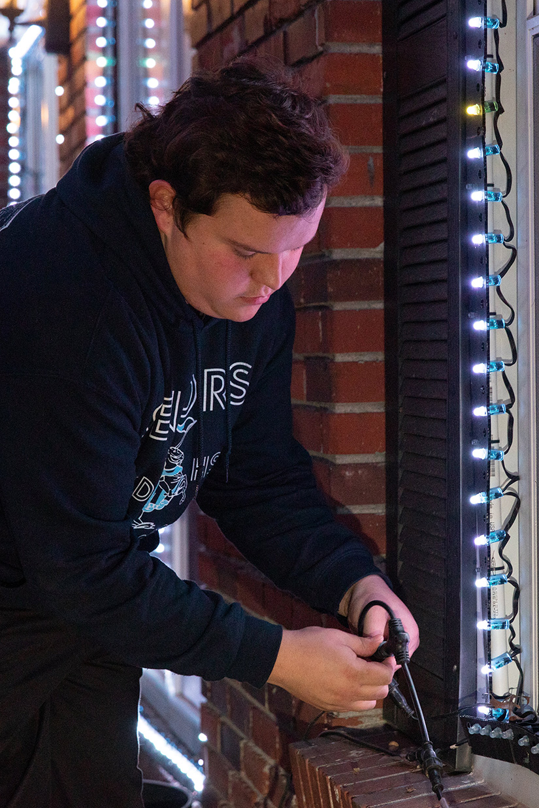
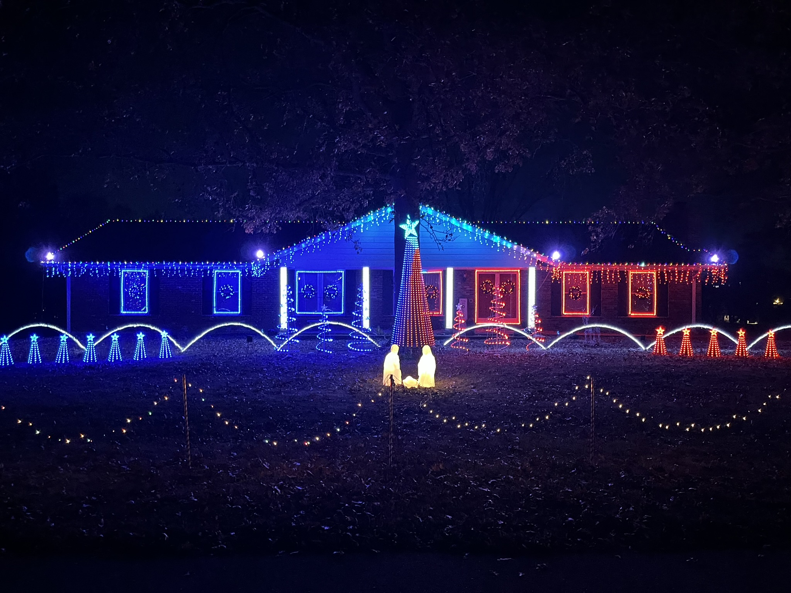
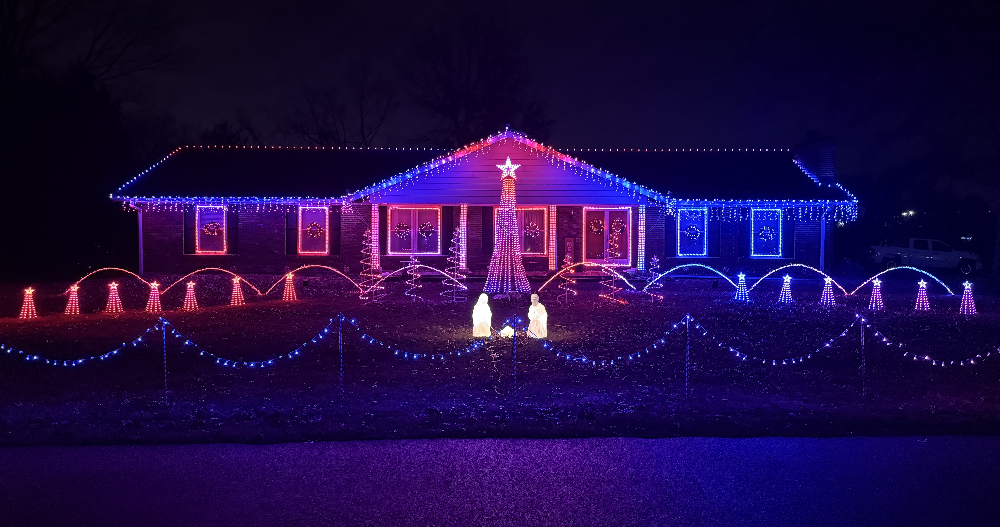

Christmas Lights
Behind The Lights
How It’s Done
Ever wondered how to make your own light show? This page is all about how it's done! I'll walk through how thousands of individually controlled lights, two main pixel controllers, a dedicated show computer, and a whole lot of programming all work together to make Hidden Lake Lights come alive.
Main Pixel Controllers
Installed DC Supply Capacity
Show Radio Station
It Starts With A Song
More Than Just Lights
A synchronized light show is really several systems working together at the exact same time. The music, lighting data, controllers, power system, network, and FM audio all have separate jobs. When everything is timed correctly, the result looks simple: the lights dance to the music.
IMPORTANT:
These pixel lights are not meant for normal consumer use. They require computer programming and special electrical equipment to operate. Failure to do so may cause serious issues, and could be dangerous.
View The Process
From Music To Light
Here is the path a lighting command takes before a pixel in the yard changes color.
01
Design
xLights
xLights is your sequencer. This is where you make the magic happen. A standard 3 minute song takes about 3 weeks of programming time, but there are easier ways to start off. Many companies offer sequences for purchase! But I think that's no fun!
02
Playback
xSchedule
xSchedule is a program that is paired with xLights to easily schedule all your sequences to play whenever you'd like automatically.
03
Show Control
Dedicated Show PC
The computer outputs the lighting data onto a private Ethernet network dedicated to the show.
04
Transport
Private Network
No internet is required. The show PC talks directly to the outdoor pixel controllers.
05
Control
Dedicated Pixel Controllers
The controllers receive show data and generate the precise signals needed by each connected pixel string. I specifically only use falcon controllers from Pixel Controllers. Our show uses an F16V4 and F16V3 with multiple expansion boards and remote recievers.
06
Long-Distance
Smart Receivers
You can use smart recievers to get pixel data to props that are further away from your controllers. Our show uses these for some roof props, and the singing trees.
07
The Result
LIGHT!
After sequencing your first song, purchasiung your equipment and hooking it all up, you should finally have a show! Now all you need is an FM Radio Transmitter to get music to cars on the street!
Running Alongside The Data
The 12V Power System
In our display, we have nine 12V power supplies and roughly 14 distribution boards to deliver DC power around the display. Power can be injected at different points so long pixel runs stay bright and different areas can be isolated into easier-to-troubleshoot zones.
Inside The System
The Equipment
Every part of the show has a specific job. Here is what we use and why.
SEQUENCING
xLights
xLights is the software used to design the show. It is free and open source and supports technologies such as DMX and E1.31 Ethernet-based lighting control. The house and props are modeled inside the software, then effects are placed on a timeline to match the music.
PLAYBACK
xSchedule
Hidden Lake Lights uses xSchedule, which is included with xLights, to run the show each night. It handles scheduled playback of the sequence and music. Another popular option in the lighting community is Falcon Pi Player, commonly called FPP.
MAIN CONTROL
Pixel Controllers
We currently use two main pixel controllers. A Falcon F16V4 and F16 V3. These control the visible behavior of every connected light — color, intensity, timing, flashing and effects — based on the data sent by the show computer.
REMOTE OUTPUTS
4 Falcon Smart Receivers
Smart Receivers let controller outputs reach areas that are inconvenient to wire directly back to the main controller locations. We use them for farther-away elements including roof props and the singing faces.
NETWORK
Offline By Design
The show network is intentionally not connected to the internet. The show PC has a direct network path to the pixel controllers outside. Keeping the show network focused on one job makes the design simple and reduces unnecessary dependencies.
AUDIO
1Watt FM Transmitter
The same music used for sequencing is broadcast so guests can listen from inside their vehicles. Hidden Lake Lights uses a 1-watt FM transmitter and broadcasts on 90.1 FM.
The Lights Themselves
What Is A Pixel?
Unlike a traditional strand where many bulbs behave as one circuit, an addressable RGB pixel has a small computer chip inside that lets the system command individual lights. Each pixel has three tiny LEDs inside of it, Red, Green, and Blue. That is what makes effects appear to move, sweep, chase and sparkle across the house.
Our pixels are custom ordered from vendors in China so we can specify the exact build we want — chip type, voltage, wire color, wire gauge, spacing between lights, connector style and more.
OUR GO-TO PIXEL SPEC
ChipWS2811
Voltage12V DC
WireBlack 18 AWG
Spacing3 Inches
Connectors13.5 mm Pigtails
ControlIndividual RGB
Powering The Display
12 Volts. A Lot Of Current.
Pixels run on low-voltage DC power, so standard household AC has to be converted before it can feed the display.
12V Power Supplies
30A / 360W each
Approx. Distribution Boards
Power split into manageable zones
Typical Show Brightness
Plenty bright after dark
Estimated AC Draw
Approximate, not a measured full-show value
Why so many distribution boards?
Long wire runs create voltage drop. Instead of trying to power an enormous portion of the show from one point, power is distributed around the property and injected where needed. This helps maintain voltage and creates logical power zones that are much easier to diagnose when something goes wrong.
Why only 30% brightness?
RGB pixels are extremely bright at night. Running the display at full output is unnecessary for the visual effect and would dramatically increase the electrical load. Around 30% still looks very bright to viewers while keeping power demand much more reasonable.
The estimated 27-amp AC figure is a practical estimate, not a laboratory measurement of the entire show. Real demand changes constantly because different sequences use different colors, effects and brightness levels.
A Tiny Conversation
What The Pixel Hears
A pixel does not understand “make the roof candy cane sparkle.” It receives a stream of digital values. The controller sends color information down the string, and each WS2811 pixel takes the portion meant for it before passing the remaining data farther down the line.
xLights handles the creative side. The Falcon controllers handle the real-time output. The result is precise control over thousands of individual points of light without a separate control wire running to every bulb.
FALCON
R
G
B
LISTEN ON
90.1
FM
The Other Half Of The Show
Getting The Music To Your Car
The audio playing with the sequence is also fed to a small FM transmitter. Visitors tune their car radio to 90.1 FM, so the music reaches them without outdoor speakers filling the neighborhood with sound.
We currently use a 1-watt transmitter that I purchased from amazon. Anyone building an FM-based display should verify the rules that apply where they live, use an appropriate transmitter, and select a frequency that does not cause harmful interference to licensed broadcasts.
Before Opening Night
Building A Season
The final show is only the last step. Most of the work happens long before the first car arrives.
Plan
Decide what changes, which props are being added and how the display will be laid out.
Build
Assemble props, wire controllers, build power zones, make cables and prepare enclosures.
Sequence
Program songs in xLights, often adjusting individual effects down to fractions of a second.
Install
Mount the lights, props, controllers, receivers, power equipment and network connections.
Test
Find bad pixels, wiring mistakes, weak voltage points, communication issues and sequencing problems.
Showtime
xSchedule takes over and the entire system repeats the programmed show throughout the night.
The Part You Usually Don’t See
Behind The Scenes
Finished lights are the fun part. Setup, wiring, testing and troubleshooting are what make them possible.

Setup & Installation
The Finished Display
Lights In ActionCommon Questions
Technical FAQ
Does every light have its own wire back to the controller?
No. Pixels are daisy-chained. Data moves down a string from one pixel to the next, which allows thousands of lights to be individually controlled without thousands of separate home-run cables.
Is the show controlled over Wi-Fi or the internet?
No. Hidden Lake Lights uses a dedicated, offline network between the show computer and the pixel controllers. The show does not need an internet connection to run.
Do the Falcon controllers store all of the songs?
In our setup, xSchedule on the show PC handles playback. The Falcon controllers receive the live lighting data and output it to the pixels.
Why are Smart Receivers needed?
They let us place pixel outputs closer to props that are physically farther from the main controller locations, including roof elements and singing faces.
Why not run the pixels at 100% brightness?
They are already extremely bright after dark. Full brightness would add a huge amount of unnecessary glare and electrical demand. The show typically runs around 30% brightness.
How does the music stay synchronized with the lights?
The sequence and audio share the same timeline. xSchedule plays the show from the computer while the lighting data is sent to the controllers in real time.
Now You Know The Secret
Come See It All Working Together.
When you visit, tune to 90.1 FM and remember: every little flash you see started as a programmed instruction on a computer.